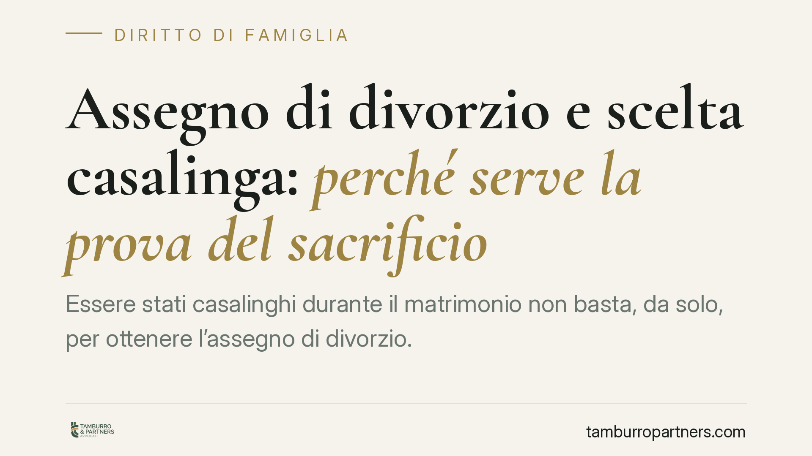

Assegno di divorzio e scelta casalinga: perché serve la prova del sacrificio
Essere stati casalinghi durante il matrimonio non basta, da solo, per ottenere l'assegno di divorzio. La Cassazione ribadisce che la scelta di non lavorare è circostanza neutra: va dimostrato il concreto sacrificio di occasioni professionali rinunciate per la famiglia. Un orientamento che incide direttamente su chi affronta oggi una separazione e sul modo di costruire la propria difesa.

Il principio: la scelta casalinga non è un titolo automatico
Nel contenzioso sull'assegno divorzile torna ciclicamente la stessa questione: chi ha dedicato gli anni del matrimonio alla cura della casa e dei figli ha, per ciò solo, diritto a un sostegno economico dopo il divorzio? La risposta della giurisprudenza di legittimità è netta e non va fraintesa: no, non automaticamente.
La scelta di non svolgere attività lavorativa è una circostanza neutra. Non depone né a favore né contro il riconoscimento dell'assegno. Ciò che conta è altro: dimostrare che quella scelta ha comportato la rinuncia a reali e concrete occasioni professionali, a vantaggio della vita familiare. È il sacrificio provato, non lo status di casalingo in sé, a fondare la pretesa economica.
*(Nota redazionale: gli estremi della pronuncia più recente richiamata dalle fonti divulgative sono in corso di verifica. L'inquadramento che segue poggia su orientamenti consolidati e verificati della Cassazione.)*
Inquadramento normativo: la natura composita dell'assegno
Il riferimento imprescindibile resta la pronuncia delle Sezioni Unite n. 18287/2018, che ha superato il criterio del solo tenore di vita goduto in costanza di matrimonio. L'assegno di divorzio ha oggi natura composita:
- funzione assistenziale: garantire i mezzi adeguati a chi non ne dispone e non può procurarseli;
- funzione compensativa: riconoscere il contributo dato alla formazione del patrimonio comune e personale dell'altro coniuge;
- funzione perequativa: riequilibrare le posizioni quando uno dei due ha sacrificato aspettative reddituali per la famiglia.
La componente compensativa e perequativa è decisiva proprio per chi ha fatto il casalingo. Ma non si presume: va allegata e provata. Occorre indicare quale percorso professionale sia stato interrotto o non intrapreso, quali competenze non siano state coltivate, quale reddito sia stato rinunciato.
L'onere della prova e le presunzioni (art. 2729 c.c.)
Qui entra in gioco l'art. 2729 del codice civile, che disciplina le presunzioni semplici. In mancanza di prova diretta, il giudice può risalire da un fatto noto a un fatto ignoto, ma solo attraverso elementi gravi, precisi e concordanti:
- gravi: dotati di sufficiente capacità dimostrativa;
- precisi: specifici, non generici;
- concordanti: convergenti verso la medesima conclusione.
Affermare genericamente «ho rinunciato al lavoro per crescere i figli» non integra alcuno di questi requisiti. Serve un quadro documentale e circostanziato. È su questo terreno che molte domande di assegno vengono respinte.
La neutralità taglia in entrambe le direzioni
Un punto spesso trascurato: il principio della neutralità non penalizza soltanto chi chiede l'assegno. Vale anche a difesa di chi lo ha richiesto con fondamento. Se la parte interessata documenta un sacrificio reale, la circostanza di essere stata casalinga cessa di essere neutra e diventa elemento qualificato a sostegno della domanda compensativa.
Di converso, chi si oppone alla richiesta ha interesse a dimostrare l'assenza di reali occasioni perse: che l'altro coniuge non avesse qualifiche spendibili, che il mancato lavoro dipendesse da una scelta non riconducibile alla famiglia, o che sussista piena capacità di reinserimento lavorativo attuale.
Implicazioni pratiche per chi affronta oggi un divorzio
Chi si prepara a una separazione o a un divorzio deve abbandonare l'idea che il ruolo domestico garantisca di per sé un assegno. La difesa si vince o si perde sulla costruzione documentale del sacrificio, da impostare fin dalle prime fasi e non in appello.
### Come costruire la prova del sacrificio
Lavorare su elementi concreti e verificabili:
- titoli di studio e qualifiche professionali conseguiti prima del matrimonio;
- contratti di lavoro, lettere di assunzione o offerte rifiutate per esigenze familiari;
- interruzioni di carriera documentabili (dimissioni, aspettative, mancati rinnovi);
- confronto tra la propria posizione reddituale e quella che si sarebbe plausibilmente raggiunta;
- durata del matrimonio e ripartizione dei ruoli, con riscontri oggettivi.
Cosa fare in concreto
- Ricostruisci la tua storia professionale: recupera titoli, contratti, buste paga e ogni traccia del percorso interrotto o non avviato.
- Documenta la scelta familiare: raccogli prove che colleghino la rinuncia lavorativa alle esigenze della famiglia, non a motivazioni personali estranee.
- Quantifica il sacrificio: non limitarti ad affermarlo, stima il reddito o la carriera plausibilmente persi con riscontri concreti.
- Verifica la tua capacità attuale: valuta realisticamente le possibilità di reinserimento, che il giudice considera ai fini assistenziali.
- Agisci per tempo: consigliamo di impostare la strategia probatoria già prima del deposito della domanda, quando ancora è possibile reperire la documentazione.
Il messaggio di fondo è chiaro: l'assegno di divorzio non premia uno status, ma compensa un contributo provato. Chi arriva in giudizio con un fascicolo solido parte da una posizione diversa rispetto a chi si affida a formule generiche.
---
Contributo informativo a cura di Tamburro & Partners Avvocati - Avv. Giuseppe Tamburro. Non costituisce parere legale.
Ogni famiglia ha il suo equilibrio.
Separazione, divorzio, affidamento, assegno: se vuoi un confronto riservato su una specifica situazione, scrivi allo studio. Ti rispondiamo entro un giorno lavorativo.